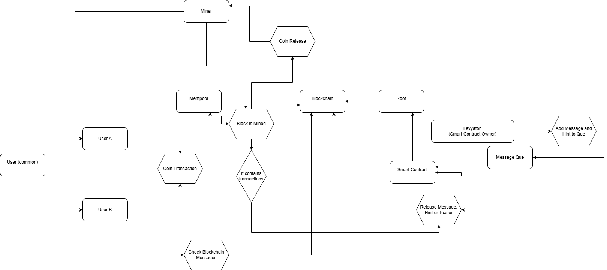

Introduction to ARGs
Alternate Reality Games (ARGs) blend narrative storytelling with interactive real-world elements, challenging players to solve puzzles and participate in immersive experiences that extend beyond digital boundaries. They invite participants to unravel mysteries, often blurring the lines between fiction and reality.
What Makes This PoC Unique
This proof-of-concept leverages blockchain technology to ensure transparency, immutability, and decentralization of the narrative. By integrating a coin-based infrastructure, community members are rewarded for participation, fostering a self-sustaining ecosystem that enhances engagement and builds a vibrant community around the ARG experience.
How does the smart contract work?
My smart contract allows for a user (a check is in place to guarantee that only I, Levyaton, the creator of the contract, who deployed it, is the command sender) to make a request. This request contains a message, how many parts it is to be split into, and a hint.
The message is then evenly split up into the given parts, and each part is added to a message queue. The hint is added to the end of the queue. Each time a block is mined, with a transaction included in the mempool, the smart contract is triggered, and a message is released from the queue. If a block is mined, and no transaction is in the mempool, then no message is released. If a transaction is in the mempool, but no message is qued up, then a teaser hardcoded into the smart contract is released instead.
Every block only has, at most, 1 message in it. After the first transaction is stored in the block, subsequent transactions that trigger the smart contract will not release a message until the next block is mined.
Users will have the ability to view previously released messages. There are, of course, many ways this concept can be utilized in an ARG. One such option is splitting a url into slowly released segment, and the hint giving players a clue what to do with the compiled site.
I, however, have a more fun idea in mind. Using an RSA cypher, we can, off chain, encode a message, and save the key needed for its decryption on a flash drive. We split it into N segments (the number of segments could, potentially, itself be a key for some types of cyphers), and have the hint be coordinates.
Players can then IRL go to the coordinate location, where they will find a flash drive with a key saved in a plain text file. Compiling the segments into a single string, and providing the found key and encrypted message to an RSA decryption tool, will let the players uncover developments in the ongoing ARG story.
The reason I find this so exciting, is the sheer flexibility of the concept. The smart contract can be used to release any kind of information, and the hint can be anything from a simple clue, to a real world location. The possibilities are endless, all while encouriging an ecosystem, where the miners will be rewarded a cryptocurrency, that they can trade, to release further clues, to progress the narrative.
Concept Diagram
Bellow is a diagram of the ARG blockchain infrastructure
Learn More
For detailed instructions on how to test the PoC and to explore the full documentation, please visit our README.